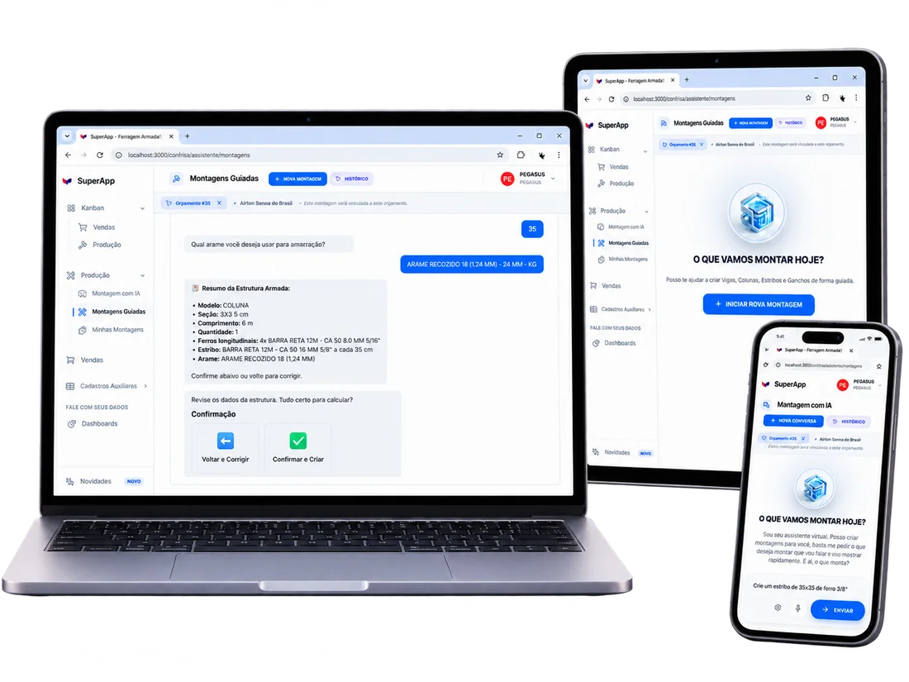
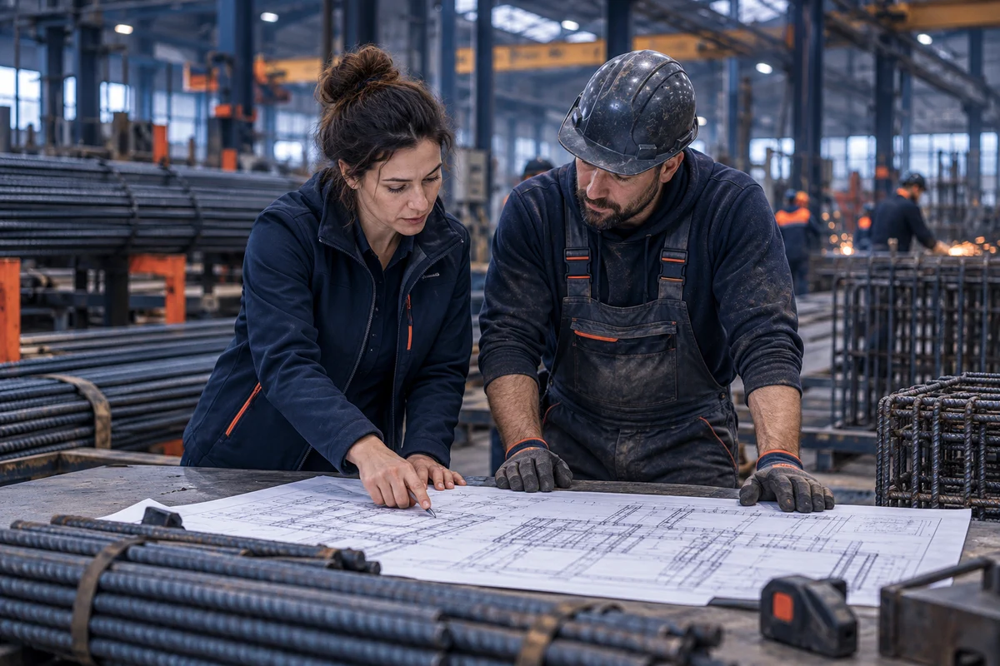

Orce e compartilhe
Organize os itens, calcule o preço com base na margem desejada e envie a proposta por link para o cliente.
Organize pedidos, monte estruturas, planeje cortes e acompanhe a produção no mesmo sistema. Quando precisar, a IA pode ajudar a criar um croqui para sua equipe conferir e ajustar.
Pedidos, medidas, propostas e etapas de fábrica muitas vezes ficam espalhados. O SuperApp conecta o processo: a equipe orça, monta, planeja o corte e acompanha a produção em um fluxo único. Na montagem, escolha entre modelos, desenho livre, montagem guiada ou apoio da IA.
UM FLUXO DE PONTA A PONTA Vendas → Projeto → Corte → Produção
Organize os itens, calcule o preço com base na margem desejada e envie a proposta por link para o cliente.
Configure a peça com modelos, desenho livre ou montagem guiada. Se quiser, use a IA para gerar um croqui inicial e confira os detalhes.
Planeje o aproveitamento das barras, gere instruções de corte e acompanhe o avanço das ordens no Kanban.
Da proposta técnica à orientação de montagem, cada recurso atende uma etapa concreta da operação.
Monte propostas, compartilhe o link e receba o aviso de aprovação para avançar o pedido.
Combine modelos, desenho livre e montagem guiada. A IA pode sugerir um croqui a partir da descrição; sua equipe confere e ajusta.
Trabalhe com modelos, medidas e ângulos. Ajuste armaduras, camadas, ferros e estribos conforme a necessidade.
Reúna montagens de pedidos diferentes em um plano e obtenha uma folha de corte barra por barra.
Visualize o trabalho em etapas, do orçamento às montagens e à fábrica, para acompanhar o que está em andamento.
No plano Corporativo, conecte o SuperApp às rotinas de estoque, financeiro, faturamento e emissão fiscal.
Quando os pedidos se acumulam, o cliente espera enquanto a equipe reúne medidas, confere a montagem e prepara a proposta. O SuperApp ajuda a encurtar esse caminho, com informações que também servem à produção.
Ver as telas do sistema
Imagens reais dos módulos ajudam a entender o trabalho de cada equipe no SuperApp.
Vendas, projeto e produção acompanham o mesmo pedido. O SuperApp reúne as informações para cada pessoa saber o que já foi feito e qual é o próximo passo. A IA pode ajudar em uma montagem; a conferência e as decisões continuam com quem conhece a operação.

Ele atende o fluxo especializado de ferragem armada mesmo quando sua empresa já usa outro ERP. Se você também precisa conectar gestão comercial, estoque, financeiro e faturamento, o plano Corporativo inclui a integração com o ERP Confisa.
Comparar os planosCompare os recursos e encontre a estrutura certa para sua equipe. Os valores abaixo foram conferidos no site do SuperApp em 26/10/2026.
Organize montagens e orçamentos em um só lugar.
Amplie o controle do corte e da produção.
Conecte o SuperApp à gestão da empresa.
A IA é um recurso de apoio à montagem e consome créditos conforme o plano contratado. Pacotes extras podem ser adquiridos no fluxo de contratação atual. Ao continuar, confirme o plano selecionado e as condições antes de assinar.
Se precisar avaliar seu processo específico, converse com a equipe comercial da Confisa.
Falar com a equipeNão. Ele apoia a criação do orçamento e das orientações de montagem a partir das informações técnicas fornecidas pela equipe. O croqui e os dados gerados devem ser conferidos pelos responsáveis.
Se quiser, descreva a peça por texto ou voz para receber uma sugestão de croqui. A equipe confere e ajusta a montagem. Também há modelos, desenho livre e montagem guiada.
O vendedor pode compartilhar o link da proposta, inclusive pelo WhatsApp. Quando o cliente aprova, o cartão recebe um alerta; o vendedor faz a mudança de etapa.
Sim. A otimização pode reunir montagens de pedidos diferentes em um plano e gerar uma folha de corte barra por barra.
Não. O SuperApp pode complementar outro ERP com as rotinas especializadas de ferragem armada. A integração com estoque, financeiro e faturamento do ERP Confisa está no plano Corporativo.
O apoio por IA consome créditos conforme o plano contratado. O site atual também informa a opção de comprar pacotes extras.